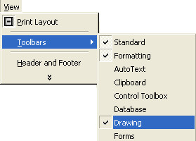
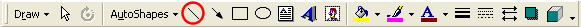
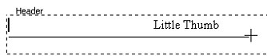
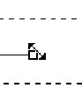
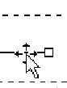
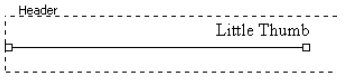

Free
computer Tutorials
|
Free
computer Tutorials
|
|
 home home |
|
||||
How to Format your Microsoft Word Headers In the previous section,
you learnt how to enter text in the Header area of the page. We'll now
see how to add some extra formatting to the Header area.
 You should see the drawing toolbar appear. It might be at the bottom of the page, but it will look like this: The important one for us is the diagonal line, after "AutoShapes. It is circled below: 
 If your line is not straight, you can do something about it. First, be aware of the two different shapes your mouse pointer can turn into. If you want to straighten your line, or if you want to resize the line, the mouse pointer should look like this:  If you want to move your line, the mouse pointer should look like this:  The square box indicates that the line is selected. You select the line by clicking on it with the left mouse button. You can't straighten, resize, or move the line until you have selected it. To straighten a line then, move your mouse pointer to the right hand square white box, until your mouse pointer changes to the shape of the double-headed arrow.
At the moment, the line's a little too big. We can shorten it.
Your line should now look something like the one below:  We can move it up a bit now.
You might have found that the line won't go exactly under the text. When you try to move your line, it might jump up too much. To solve the problem, you need to learn how to use the Drawing Grid. This gives you much finer control of how far objects like lines can move on the page. We'll see how to use that in the next part of this lesson.
Learn how to use the Drawing Grid in Word --> |
|||||
|